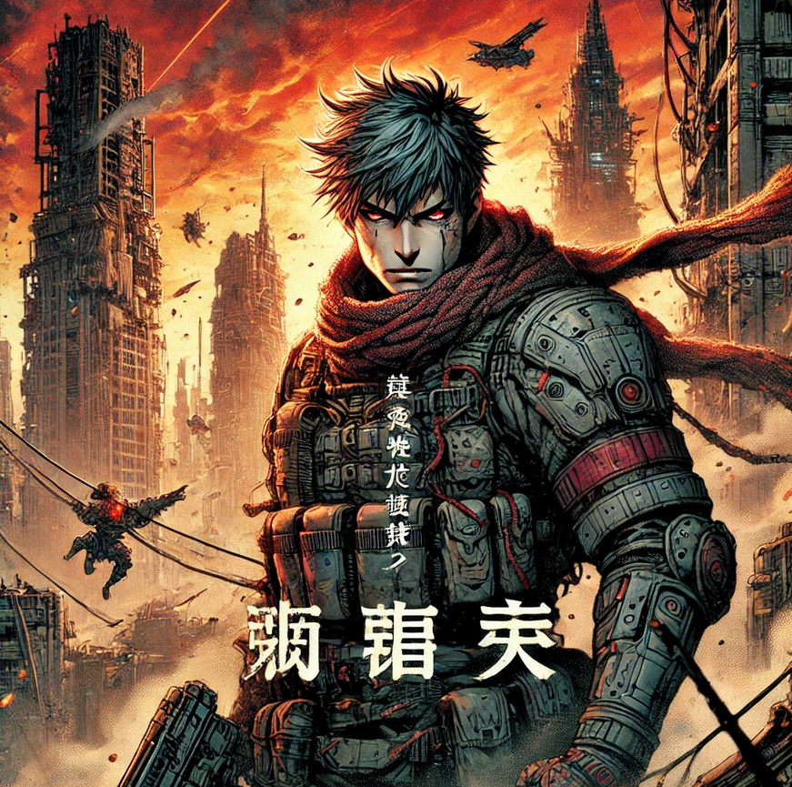
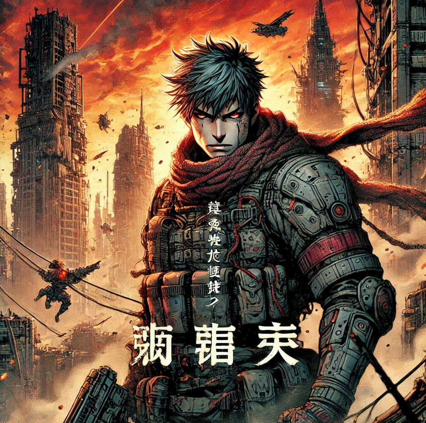
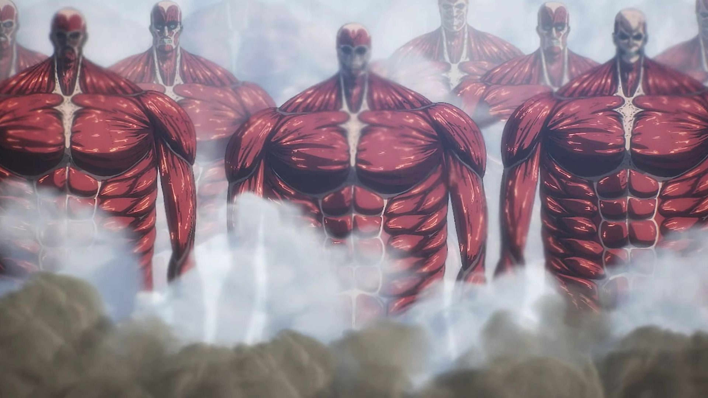
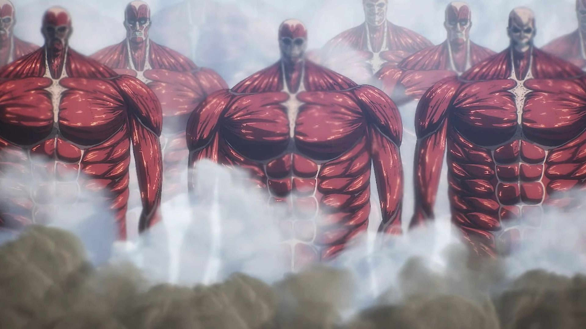

2006
Tokyo (Japon)
Isayama présente une version initiale de L’Attaque des Titans au concours du Magazine Grand Prix de Kodansha, où il reçoit un prix d’encouragement.
Isayama présente une version initiale de L’Attaque des Titans au concours du Magazine Grand Prix de Kodansha, où il reçoit un prix d’encouragement.
Début de la publication en série de L’Attaque des Titans dans le magazine Bessatsu Shōnen Magazine.
La première saison de l’adaptation animée de L’Attaque des Titans est diffusée, propulsant la popularité de l’œuvre à l’échelle internationale et faisant d’Isayama un mangaka de renommée mondiale.
Publication du dernier chapitre de L’Attaque des Titans (Chapitre 139), marquant la fin d’une série emblématique après 11 ans de publication.
Hajime Isayama a été l'invité d'honneur du 50e Festival International de la Bande Dessinée d'Angoulême. Une exposition consacrée à L'Attaque des Titans a présenté des planches originales couvrant toute l'œuvre. Cet événement célébrait également les 10 ans de la publication française du manga
 


 
